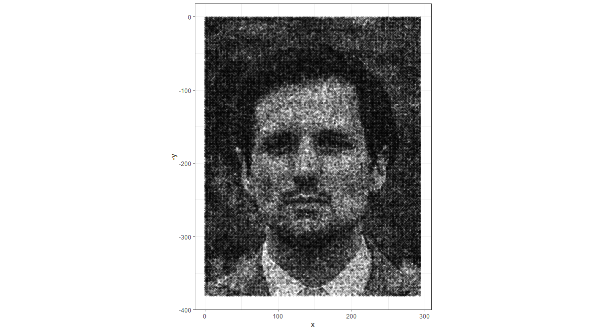

I am a statistician and data scientist working at Eighty20 loyalty consulting in South Africa.

Current skills
- Advanced R programming
- tidyverse
- r-markdown (some LaTeX)
Python
H2o Machine-Learning Framework (within R)
SQL
Excel
- Content-based filtering (recommender engine algorithm)
- TF-IDF
- implementation in both R and python
- Linear optimisation
- Linear programming
- Integer Programming
- Multiple-objective optimisation
Uplift Modelling
- Time Series modelling
- ARIMA
- Exponential Smoothing (state space models)
- Time Series Decomposition (trend, seasonality, error)
- Regression Modelling
- Linear models (+splines), regression tree, GBM, random forest, feed-forward neural network
- Classification Modelling
- Logistic Regression (+splines), classification tree, random forest, GBM, LDA, feed-forward neural network
- Clustering
- Hierarchical
- k-means
- PAMS (k-medoids) & CLARA
- Gower distance for mixed data types
Association Rules (basket analysis)
- Advanced Data visualisation
- base R plotting tools
- ggplot2
- interactive 3-dimensional visualisation using plotly
- sankey diagrams using networkD3
- plots of hierarchical data using data.tree and treemap
Regular Expressions (REGEX)
- Dimension Reduction
- Principal Components Analysis (PCA)
- Multi-Dimensional Scaling (MDS)
- Locally Linear Embedding (LLE)
Current development areas
- Advanced time-series modelling
- ARCH and GARCH models
- TBATS
- hybrid models (combining predictions of multiple models)
- linear regression with autocorrelated errors
- Vector autoregression (VAR models)
Deep learning
Advanced Python
- Multivariate Analysis
- Multiple Correspondence Analysis
- Factor Analysis
- Biplots
- Experimental Design
- \(2^k\) designs
- understanding of the optimality of orthogonal designs
- SQL
Areas of potential future interest
CSS and HTML
Reinforcement learning
Excel VBA
- Non-linear dimension reduction algorithms
Stochastic Processes